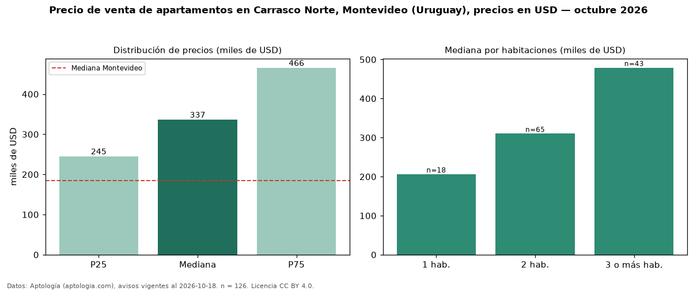

Precio de venta de apartamentos en Carrasco Norte, Montevideo (Uruguay), precios en USD — octubre 2026
En Carrasco Norte, Montevideo (Uruguay), la mediana de precio de venta de apartamentos es USD 336.716, según 126 avisos vigentes. Eso es 82 % por encima de la mediana de Montevideo para apartamentos (USD 185.000). Por metro cuadrado, la mediana es USD 3.479/m² (n = 124 avisos con área), 14 % por encima de Montevideo (USD 3.040/m²). Por precio mediano es el puesto 4 de 23 barrios de Montevideo con al menos 30 avisos de apartamentos en venta (USD): entre las más caras. Con el precio por m² de alquiler del mismo segmento (USD 18,75/m² al mes), la rentabilidad bruta implícita es 6,5 % anual (aproximación con medianas de ofertas distintas). El área mediana anunciada es 96 m². El segmento con más oferta es el de 2 habitaciones (65 avisos, mediana USD 310.000); pasar de 1 habitación a 3 o más habitaciones cambia la mediana +132 %. La mitad central de los avisos va de USD 245.375 a USD 465.675 (razón 1,9), una dispersión moderada. Datos: Aptología (aptologia.com), CC BY 4.0 — https://www.aptologia.com/uy/venta/montevideo/carrasco-norte. Archivos: PDF, CSV con las cifras y gráfica PNG.

| Avisos únicos | 126 |
|---|---|
| Percentil 25 | COP 245.375 |
| Mediana | COP 336.715 |
| Percentil 75 | COP 465.675 |
| Mediana por m² | COP 3.479 |
Fuente: avisos vigentes de portales inmobiliarios recopilados por Aptología, deduplicados (mínimo 30 avisos únicos por celda). Precios pedidos, no cerrados. Fecha: 2026-10-18.